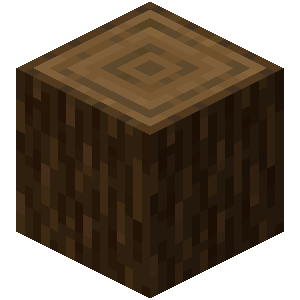
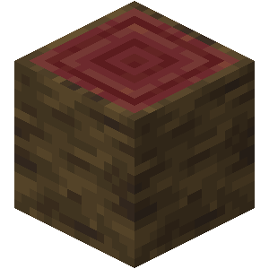
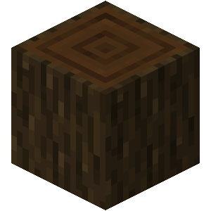
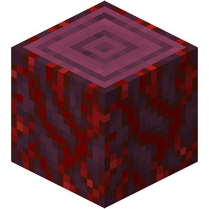
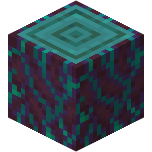
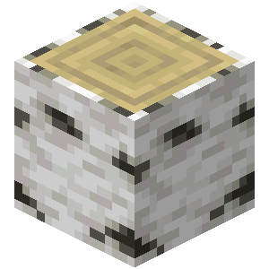
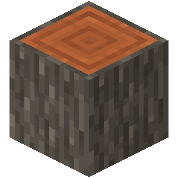
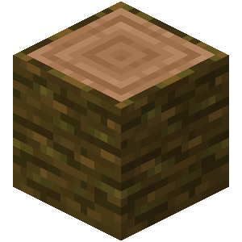
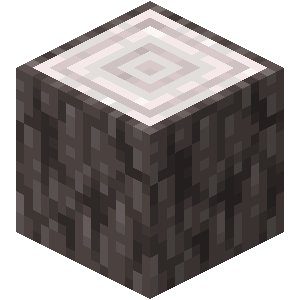
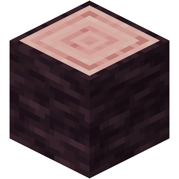

| Top | Nom | Visuel | Biome | Review |
|---|---|---|---|---|
| S | Sapin |  |
Taiga | Je vais pas être très originale mais c'est clairement le meilleur, à mon avis. Il est esthétique, facile à trouver, facile à miner en grande quantité... Le GOAT. 🐐 |
| A | Palétuvier |  |
Marais à mangroves | Je le trouve parfait pour donner un peu de couleur aux builds sans que ce soit trop extravagant. J'adore la couleur et je trouve que les trappes et les portes sont trop belles. 😍 |
| B | Chêne noir |  |
Forêt sombre | Un peu l'alter ego du sapin mais avec un côté plus ✨classy✨ grâce à la couleur sombre. Je le trouve cool pour les détails des toitures ou des murs de builds. |
| C | Hyphes carmin |  |
Forêt carmin | Ceux-là, c'est un peu mes préférés, en vrai. Les couleurs sont trop belles, les portes et les trappes sont archi stylées, c'est juste que faut jouer sa vie pour aller les chercher dans le Nether et j'ai trop la flemme. 🥵 |
| Hyphes biscornues |  |
Forêt biscornue | ||
| D | Bouleau |  |
|
Simple, basique. 👌 Mais du coup, très efficace. Petite préférence pour le bouleau que je trouve sous-coté alors que le chêne est trop basique, pour le coup, trop fade. |
| Chêne |  |
|
||
| E | Acacia |  |
Savane | Lui, ça me fait un peu mal au coeur de le mettre si bas parce qu'il est orange, c'est ma couleur préférée, mais l'écorce est trop moche, les portes et les trappes sont pas si belles, et y a d'autres blocs oranges plus jolis. 😕 |
| Acajou |  |
Jungle | J'ai déjà vu des builds archi stylés avec du bois d'acajou mais perso, j'ai du mal à l'intégrer, je trouve la couleur vraiment pas folle. 🤔 | |
| F | Chêne pâle |  |
Jardin pâle | Je risque de mes faire des ennemis mais on est sur les deux bois les plus OSEF du jeu. Les biomes et les arbres en tant que tels sont très beaux/stylés mais les bois servent à R. Le rose du cerisier est fadasse à souhait et et on a déjà des blocs blancs plus stylés que du chêne pâle. Sorry not sorry. 🤷♀️ |
| Cerisier |  |
Bosquet de cerisiers |
Ce classement a été réalisé au risque de me faire embrouiller par toutes mes girlies fan du cerisier. 🌸